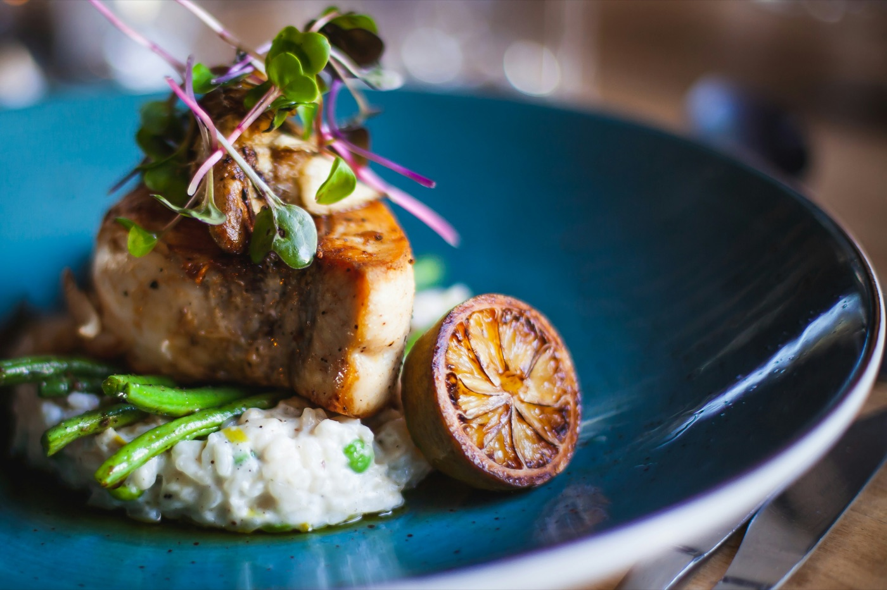
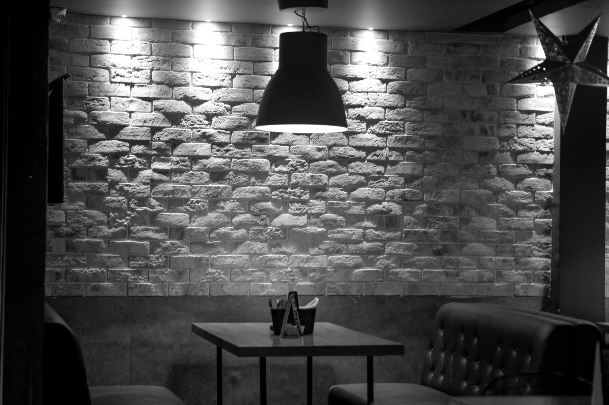
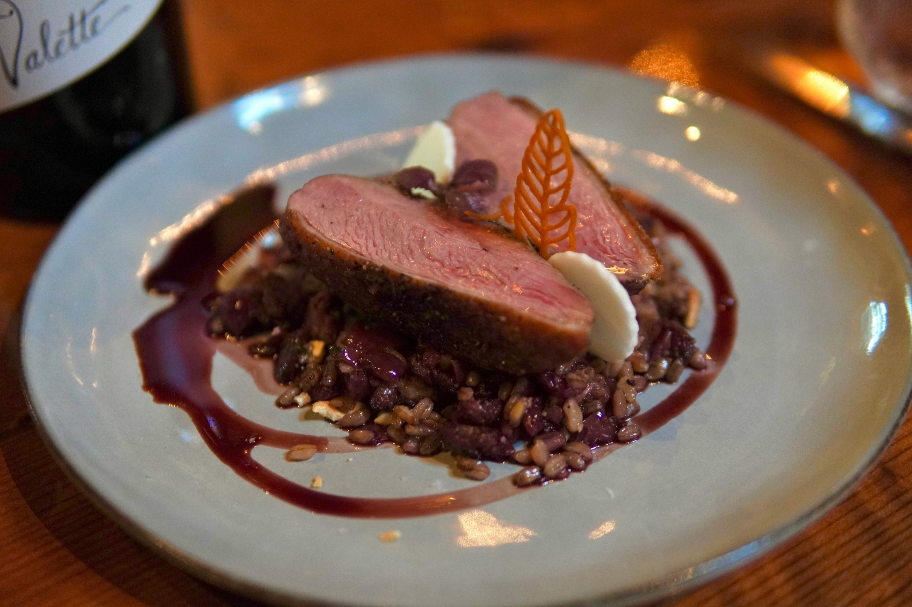
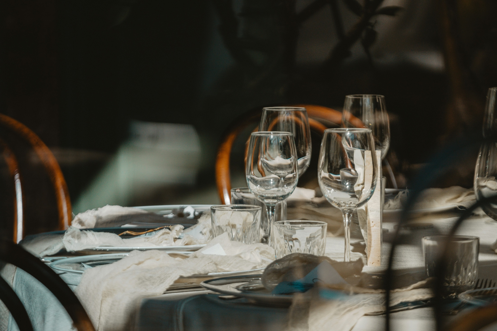

KREDENS
Klasyczna kuchnia polska i europejska w sercu Krakowa. Bez
fajerwerków na pokaz — tylko sprawdzone receptury, sezonowe
składniki i uważna obsługa.


Nazwa nie jest przypadkowa — w sali stoi prawdziwy kredens z porcelaną, którą przekazywano w rodzinie od babci. Otworzyliśmy to miejsce, żeby serwować dania, które się pamięta, w przestrzeni, która ma duszę.
Kamienica przy Kanoniczej ma się dobrze — wysokie sufity, kamienne ściany, świece zamiast jarzeniówek. To sala, w której chce się zostać dłużej niż planowano.

Karta zmienia się z sezonem, ale zasady zostają te same: dobry wywar warzy się dwa dni, mięso odpoczywa tyle, ile trzeba, a talerz wygląda tak, jak sam obiad powinien smakować — spokojnie i dopracowanie.

Osiemnaście stolików, cisza, która sprzyja rozmowie, i obsługa, która pamięta, jak lubisz swój stek wysmażony. To sala na rocznicę, kolację biznesową albo po prostu wieczór, na który warto się ubrać odrobinę lepiej.
"Najlepszy sernik w Krakowie, mówię to bez przesady. Obsługa pamiętała naszą rocznicę z zeszłego roku."
— Anna i Piotr, Kraków
"Miejsce na poważną kolację biznesową — cicho, elegancko, karta win dobrana z głową."
— Tomasz, gość biznesowy
Rezerwacja telefoniczna lub mailowa — bez systemów, po prostu zadzwoń.
Karta win dobrana przez sommeliera do każdego dania.
Kolacje prywatne i degustacyjne na zamówienie.
Karta zmienia się co kwartał, zgodnie z sezonem.
Kameralnie, bez pośpiechu.
Miejsce dostępne dla osób na wózkach.
Zadzwoń albo napisz — odpowiadamy tego samego dnia.